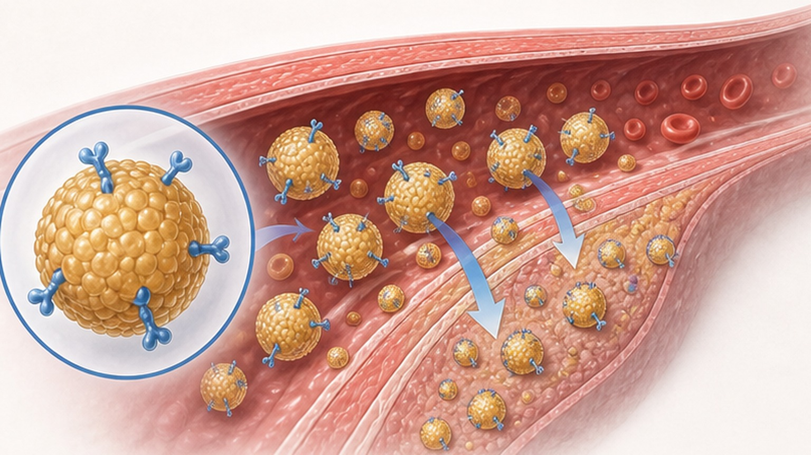
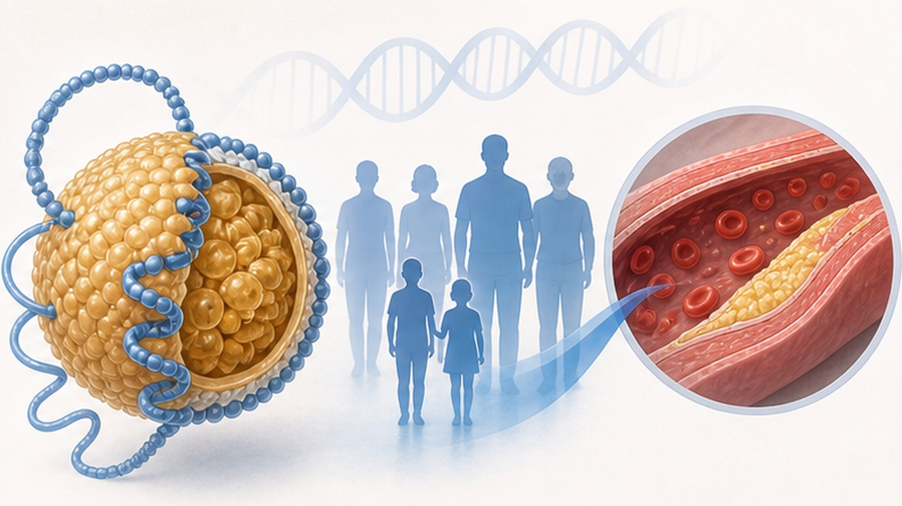
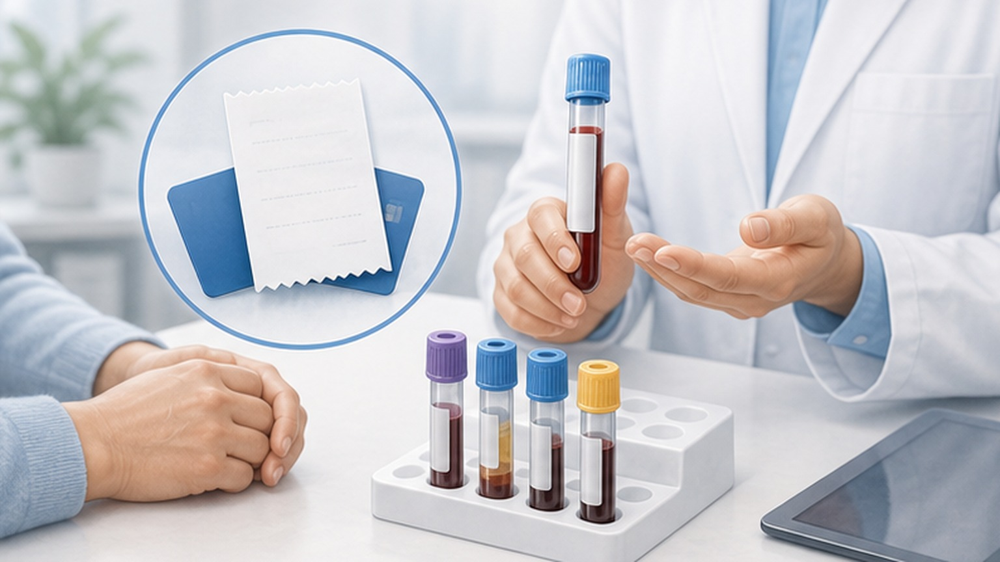

보통 피검사의 LDL 수치만으로는 놓치는 위험이 있습니다
택배로 비유하면 — LDL은 짐의 무게, ApoB는 상자의 개수입니다

LDL 수치가 실제 위험을 낮게 보여 주기 쉬운 경우입니다
내가 어느 칸인지는 병력과 위험 요인으로 주치의가 정합니다
| 위험 정도 | ApoB 목표 | 이런 분입니다 |
|---|---|---|
| 초고위험 | 55~65 mg/dL 미만 | 심근경색·뇌졸중·말초동맥질환을 이미 겪은 분 |
| 고위험 | 70~80 mg/dL 미만 | 당뇨가 있거나 고혈압·흡연·가족력 같은 위험 요인이 여럿인 분 |
| 중간 위험 | 90~100 mg/dL 미만 | 위험 요인이 2개 이상 — 생활습관 교정과 함께 약을 쓸지 상의 |
한 가지 약으로 목표에 못 미치면 다음 약을 더합니다
음식·운동으로 거의 바뀌지 않아 평생 한 번 재면 됩니다
검사지 단위가 mg/dL인지 nmol/L인지 먼저 확인하세요
| 구분 | mg/dL | nmol/L | 의미 |
|---|---|---|---|
| 낮음 | 30 미만 | 75 미만 | 따로 할 일은 없습니다. 보통의 콜레스테롤 관리를 이어 갑니다. |
| 경계 | 30~50 | 75~125 | LDL·혈압·혈당·가족력을 함께 보고 치료 강도를 정합니다. |
| 위험 증가 | 50 이상 | 125 이상 | 다른 위험 요인을 더 엄격하게 관리하고, 가족 검사를 권합니다. |
| 위험 2배 이상 | 100 이상 | 250 이상 | 위와 같이 관리하며, 새 치료제 연구 대상이 될 수 있습니다. |
한국인 약 12.8%가 50 mg/dL 이상 — 드물지 않습니다

높을수록 위험하지만, 낮추는 보충제의 효과는 뇌졸중에서만 확인됐습니다
역할이 서로 다릅니다 — 함께 보면 위험을 더 정확히 가늠합니다
| ApoB | Lp(a) | 호모시스테인 | |
|---|---|---|---|
| 무엇을 보나 | 나쁜 입자의 개수 | 타고나는 입자의 양 | 혈관을 해치는 아미노산 |
| 바뀌나 | 약·생활습관으로 낮아짐 | 평생 거의 그대로 | 엽산 섭취로 낮아질 수 있음 |
| 검사 횟수 | 치료 시작·변경 뒤 8~12주에 확인, 이후 간격은 의사와 결정 | 평생 한 번 | 의사가 필요할 때 |
| 높게 나오면 | 스타틴 등 약을 단계적으로 | 다른 위험 요인 엄격 관리 · 가족 검사 | 조건이 맞으면 엽산 보충 고려 |
진료 때 주치의와 함께 추가 검사와 치료 강도를 정합니다

QR로 다시 보기 · 내 결과 수치 읽는 법은 결과 안내문을 드립니다